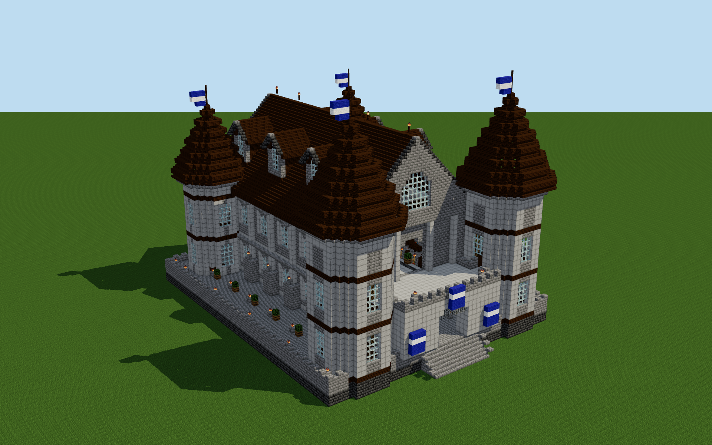

Asterfall Castle
40 librarians · 70 × 60 plot · Y=0–49
Layer
Y=0
Full screen
← Previous
Next →
X
Z
The finished castle
Exterior
Gatehouse
Great hall

Rendered from this guide’s block map. Terrain, lighting and villager poses are illustrative.
Items for the complete build
Item
Quantity
Stacks + extra
Enable JavaScript to use the layer map and calculate the complete item list.